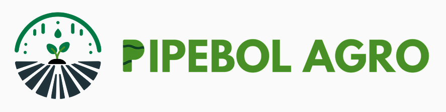

Caso de Estudio
Branding · UI/UX · Web Dev · SEO

Calidad que se exporta
PipebolAgro es una empresa boliviana dedicada a la exportación mayorista de granos para el mercado internacional. Construí su presencia digital completa: desde la identidad visual hasta una plataforma web multi-idioma.
Branding
UI/UX Design
Web Development
International SEO
IT Infrastructure
Rol
Full-stack Designer
Plataforma
Web · Bilingual
Tools
Figma · HTML/CSS